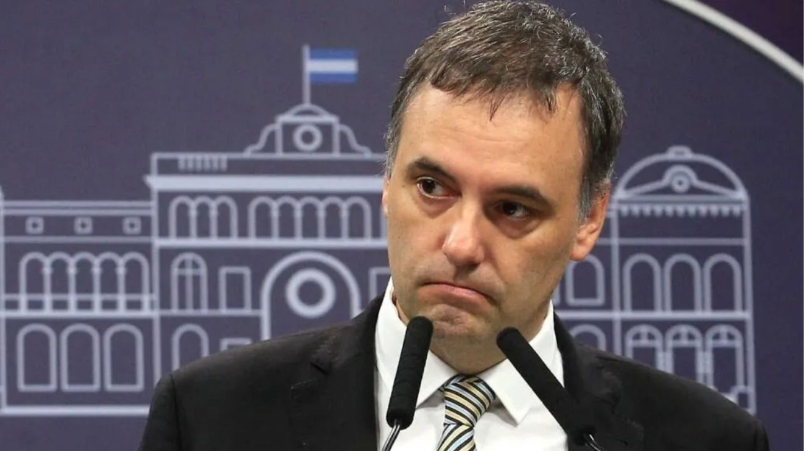

La Justicia archivó la causa contra Adorni por el viaje de su esposa en el avión presidencial
El juez Daniel Rafecas cerró el expediente por presunta malversación de caudales públicos al concluir que el traslado de Bettina Angeletti a Nueva York no generó costos adicionales para el Estado ni configuró delito alguno.

El juez federal Daniel Rafecas resolvió archivar la causa que investigaba al jefe de Gabinete, Manuel Adorni, por presunta malversación de caudales públicos vinculada al viaje de su esposa en un vuelo oficial a Estados Unidos. El expediente se había iniciado el 11 de marzo de 2026 a partir de una denuncia presentada por el abogado Gregorio Dalbón, quien cuestionó el traslado de Bettina Angeletti a la ciudad de Nueva York en el avión presidencial junto a la comitiva oficial, al considerar que no cumplía funciones institucionales y que su presencia respondía a motivos personales.
La fiscal federal Alejandra Mángano fue quien impulsó el archivo, concluyendo que el viaje de Angeletti en el avión presidencial no implicó ninguna erogación presupuestaria particular o extraordinaria, menos aún considerando que existían más de diez plazas disponibles en cada uno de los tramos aéreos realizados entre el 6 y el 11 de marzo. La fiscal sostuvo además que la decisión de incluir a Angeletti en la comitiva se encontraba dentro del umbral razonable de decisiones del Poder Ejecutivo, precisando que la invitación cursada por la Presidencia de la Nación constituye un uso razonable de la discrecionalidad presidencial.
En relación con los gastos, la fiscalía constató que el alojamiento correspondió a habitaciones dobles sin costos adicionales por acompañantes y que no se registraron viáticos ni gastos extra atribuibles a la esposa del funcionario. Con esa información incorporada al expediente, la fiscalía no formuló acusación y el juez Rafecas coincidió en que no se configuraban los elementos necesarios para sostener la continuidad de la causa, disponiendo el archivo y dando por cerrado el expediente en esta instancia, al menos hasta que eventualmente surjan nuevos elementos que justifiquen su reapertura.
De inmediato, el jefe de Gabinete destacó la novedad en las redes sociales con una frase que dejó en claro su lectura del resultado. Sin embargo, Adorni continúa siendo investigado en otras dos causas penales: una por presunto enriquecimiento ilícito y otra por supuestas dádivas vinculadas a un viaje en avión privado a Punta del Este que habría costeado un periodista amigo del funcionario y contratista de la TV Pública, ambas en etapa de prueba en el juzgado federal de Ariel Lijo. El cierre de este expediente representa un respiro judicial para el jefe de Gabinete, aunque el escrutinio sobre su patrimonio y sus vínculos sigue abierto en paralelo.